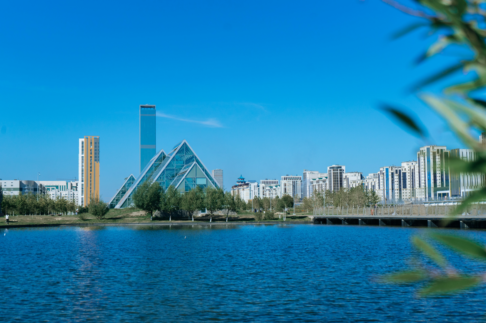

Architecture & Landmarks
- Baiterek: A tower with a distinctive golden sphere.
- Khan Shatyr: A shopping and entertainment centre beneath a tent-shaped roof.
- Palace of Peace and Reconciliation: A pyramid-shaped landmark.

Modern landmarks, open boulevards, and quiet moments beside the Ishim River.
Explore the CityKazakhstan's capital brings together striking architecture and wide public spaces. This guide introduces a few city landmarks and a sample route for exploring them.
A sample itinerary to adapt to your interests.
Start with the architecture around Baiterek and take a walk along Nurzhol Boulevard.
Make time for the National Museum, then pause for a meal before the next part of your day.
Finish with a walk along the Ishim River and a different perspective on the city.
This is an illustrative route, not a booking or a timetable. Check opening hours and travel arrangements before visiting.
| Interest | Place | What to Notice |
|---|---|---|
| Architecture | Baiterek & Nurzhol Boulevard | Shapes, scale, and the city skyline |
| Culture | National Museum | Exhibitions about Kazakhstan's heritage |
| Outdoor spaces | Ishim River embankment | Bridges and riverside views |
Ziyadinkhan's assigned pages are this Astana guide and About Us, as part of the SE-2501 team project with Ramazan Utegen.
Meet Our Team Explore Aktau Next